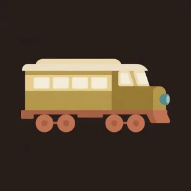

Pieces · handpan piece for D Kurd
Last train
A train that leaves slowly, finds its rhythm, and runs flat out before it pulls in.

- Kind
- Pieces
- Tempo
- 116 BPM
- Time signature
- 4/4
- Length
- 56 bars, about 116 seconds
- Notes used
- D3, A3, B♭3, C4, D4, E4, F4, G4, A4, C5
- Added
- 2026-10-11
Play in AlamutLearn bar by bar
About this pattern
Station is slow single notes. Chug is the engine: a note, a gap, two taks, over and over. Keep the taks light and even. Rails puts a tune on that engine, two notes and two taks to each beat pair. Express fills every sixteenth, so the hands trade without a gap, with the bass loud on 1 and 3. Tunnel is the engine alone and soft. Arrive is four struck pairs and the last of the engine. Learn Chug at 80 first. Everything else sits on it.
Notation
Each line is one bar in 4/4. Numbers are the pan's fields, a dot is a rest, brackets hold notes struck together, and × is a tak on the shoulder. Read the number legend below.
Station
0 . . . . . . . 4 . . . . . . .0 . . . . . . . 5 . . . 4 . . .0 . . . 1 . . . 4 . . . 1 . . .0 . 1 . 4 . 1 . 0 . 1 . 4 . 5 6
Chug
0 . × × 4 . × × 0 . × × 6 . × 50 . × × 4 . × × 0 . × × 8 . × 72 . × × 4 . × × 2 . × × 6 . 5 43 . × × 5 . × × 3 . × × 7 . 6 5
Chug
0 . × × 4 . × × 0 . × × 6 . × 50 . × × 4 . × × 0 . × × 8 . × 72 . × × 4 . × × 2 . × × 6 . 5 43 . × × 5 . × × 3 . × × 7 . 6 5
Rails
0 . 8 . 7 . × × 0 . 6 . 5 . × ×0 . 8 . 9 . × × 0 . 8 . 7 . 6 52 . 6 . 5 . × × 2 . 4 . 5 . × ×2 . 6 . 8 . × × 2 . 9 . 8 . 7 63 . 7 . 8 . × × 3 . 7 . 5 . × ×3 . 7 . 9 . × × 3 . 8 . 7 . 6 .1 . 5 . 8 . × × 1 . 5 . 7 . × ×1 . 5 . 8 . 9 . [08] . . . 5 6 7 8
Express
0 4 5 4 5 4 5 4 0 6 5 6 5 6 5 40 6 7 6 7 6 7 6 0 8 9 8 7 8 9 .2 5 4 5 6 5 4 5 2 7 6 7 6 5 6 72 9 8 9 8 9 8 9 2 9 8 7 6 5 4 .3 4 5 6 7 6 5 4 3 4 5 6 7 8 9 83 8 7 8 9 8 7 8 3 8 7 8 9 8 7 61 4 5 4 5 6 5 4 1 6 5 6 7 8 7 60 8 9 8 9 8 9 . [09] . . . 4 5 6 .
Chug
0 . × × 4 . × × 0 . × × 6 . × 50 . × × 4 . × × 0 . × × 8 . × 72 . × × 4 . × × 2 . × × 6 . 5 43 . × × 5 . × × 3 . × × 7 . 6 5
Tunnel
0 . × × . . × × 0 . × × . . × ×0 . × × . . × × 4 . . . 5 . . .0 . × × . . × × 0 . × × . . × ×0 . × × 4 . × × 0 . × × 4 . 5 6
Rails
0 . 8 . 7 . × × 0 . 6 . 5 . × ×0 . 8 . 9 . × × 0 . 8 . 7 . 6 52 . 6 . 5 . × × 2 . 4 . 5 . × ×2 . 6 . 8 . × × 2 . 9 . 8 . 7 63 . 7 . 8 . × × 3 . 7 . 5 . × ×3 . 7 . 9 . × × 3 . 8 . 7 . 6 .1 . 5 . 8 . × × 1 . 5 . 7 . × ×1 . 5 . 8 . 9 . [08] . . . 5 6 7 8
Express
0 4 5 4 5 4 5 4 0 6 5 6 5 6 5 40 6 7 6 7 6 7 6 0 8 9 8 7 8 9 .2 5 4 5 6 5 4 5 2 7 6 7 6 5 6 72 9 8 9 8 9 8 9 2 9 8 7 6 5 4 .3 4 5 6 7 6 5 4 3 4 5 6 7 8 9 83 8 7 8 9 8 7 8 3 8 7 8 9 8 7 61 4 5 4 5 6 5 4 1 6 5 6 7 8 7 60 8 9 8 9 8 9 . [09] . . . 4 5 6 .
Arrive
[08] . . . . . 9 . [09] . . . . . 8 .[08] . 7 . 6 . 5 . [04] . . . . . . .0 . × × 4 . × × 0 . × × . . . .[01] . . . . . . . . . . . . . . .
Number legend
0D3 (ding), 146.8 Hz1A3, 220.0 Hz2B♭3, 233.1 Hz3C4, 261.6 Hz4D4, 293.7 Hz5E4, 329.6 Hz6F4, 349.2 Hz7G4, 392.0 Hz8A4, 440.0 Hz9C5, 523.3 Hz×tak, a rim or shoulder tap
آخرین قطار
قطاری که آرام راه میافتد، ریتمش را پیدا میکند و با تمام سرعت میرود تا به ایستگاه برسد.
«ایستگاه» نتهای تک و آرام است. «تقتق» موتور قطار است: یک نت، یک مکث، دو تَک، پشت سر هم. تَکها را سبک و یکنواخت نگه دارید. «ریلها» روی این موتور ملودی میگذارد، دو نت و دو تَک برای هر جفت ضرب. «سریعالسیر» همهٔ دولاچنگها را پر میکند، پس دستها بیفاصله نوبتی میزنند و باس روی ۱ و ۳ پرصداست. «تونل» موتور تنها و نرم است. «رسیدن» چهار جفت نت همزمان و آخرین صدای موتور است. اول «تقتق» را با ۸۰ یاد بگیرید. همهچیز روی آن سوار است.
More Pieces
Original pieces with named sections, written for this instrument.